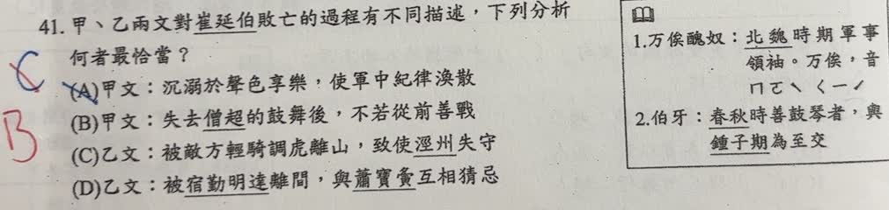
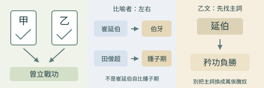

完整原題
作答所需文章／材料
【甲】 有田僧超者，善吹笳，征西將軍崔延伯甚愛之。延伯高冠長劍耀武於前，僧超吹壯士音哀曲於後。聞之者懦夫成勇，劍客思奮。延伯膽略不群，戰無不勝，二年之間，獻捷相繼。萬俟醜奴，募善射者射僧超亡，延伯悲惜哀慟，左右謂伯牙之失鍾子期。僧超死，延伯不復能戰。後延伯為流矢所中，卒於軍中。於是五萬之師，一時潰散。 （改寫自楊衒之《洛陽伽藍記》） 【乙】 延伯既破賊，乃與蕭寶夤率眾會於涇州，軍威甚盛。萬俟醜奴置營涇州西北七十里處，時或輕騎暫來挑戰，大兵未交，便示奔北。延伯矜功負勝，遂倡議先驅。眾軍將出討賊，未戰之間，有賊數百騎，詐持文書，云是降簿，乞且緩師。寶夤、延伯謂其事實而未閱。俄而宿勤明達率眾自東北而至，乞降之賊從西競下，延伯軍前後受敵。賊本輕騎，延伯軍兼步卒，兵力疲怠，延伯軍遂大敗。寶夤斂軍退保涇州，延伯修繕器械，購募驍勇。延伯恥前挫辱，不報寶夤，獨出襲賊，賊皆逃遁。延伯軍趁亂劫掠，散亂不整，賊兵還來衝突，遂大奔敗。延伯中流矢，為賊所害，士卒死者萬餘人。 （改寫自《魏書》） 字詞提示（依原卷註釋整理）：萬俟醜奴，北魏時期軍事領袖；萬俟為複姓，讀ㄇㄛˋ ㄑㄧˊ。伯牙，春秋時善鼓琴者，與鍾子期為至交。國文第41題｜比較崔延伯敗亡的兩種敘述
國文第42題｜兩文共同支持的崔延伯事蹟
先想一想，再查看答案、解說與原圖
國文第41題｜比較崔延伯敗亡的兩種敘述
分享原卷｜第 41 題 · 首次出題日期 2026-10-26 · 原AI對話 ↗
逐項解析
| 選項與原句 | 判讀 | 句意與判斷理由 |
|---|---|---|
| (A) 甲文：沉溺於聲色享樂，使軍中紀律渙散 | 不選 | 甲文的音樂使人懦夫成勇、劍客思奮，作用是鼓舞，而不是沉迷聲色導致軍紀渙散。 |
| (B) 甲文：失去僧超的鼓舞後，不若從前善戰 | 應選 | 甲文先寫鼓舞下接連獲勝，後寫僧超死、延伯不復能戰，前後因果支持B。 |
| (C) 乙文：被敵方輕騎調虎離山，致使涇州失守 | 不選 | 乙文寫假投降、前後受敵及退保涇州，並未說涇州失守，也不能任意改套調虎離山。 |
| (D) 乙文：被宿勤明達離間，與蕭寶夤互相猜忌 | 不選 | 宿勤明達率軍夾擊；文中未說他施離間計，或崔延伯與蕭寶夤互相猜忌。 |
詳細說明與解題步驟
先抓甲文兩段對照：田僧超吹奏時，「懦夫成勇，劍客思奮」，崔延伯也獻捷相繼；田僧超被射殺後，崔延伯悲痛，文中明說「僧超死，延伯不復能戰」。這個變化最直接支持B。
乙文則著重戰術與行動：敵軍假裝投降、前後夾擊；崔延伯敗後因恥辱而不通報蕭寶夤，獨自襲擊，部隊又趁亂劫掠、散亂不整，最後再敗身亡。不能把乙的內容搬到甲，或任意換成別種戰敗原因。
C將「退保涇州」誤當涇州失守。退保是撤回該處防守，不是城市已被攻陷；D把不報告就獨自出兵擴成敵方離間，亦欠缺原文依據。
圖像處理：來源AI把吹奏者畫成剃髮、僧袍的僧侶；原文首句是「有田僧超者」，這是人物姓名，不能因名字有僧字便推論出家身分。因此本題保留文字與原卷，不採用該張缺乏身分依據的圖。
① 甲文：音樂鼓舞士氣
田僧超吹奏時，文中說「懦夫成勇，劍客思奮」，崔延伯也接連獲勝。作用是鼓舞，不是沉溺聲色享樂。
② 甲文：失去鼓舞後轉弱
田僧超死後，崔延伯悲痛，原文直接說「延伯不復能戰」。前後變化最能支持B。情境圖不復原人物真實外貌。
③ 乙文：核對具體行動
乙文談假投降、前後受敵，及後來獨自出兵、軍紀散亂。「退保涇州」是撤回防守，不能改成涇州失守，也未寫離間計。
④ 甲看鼓舞前後，乙看戰術行動
答案 B：失去鼓舞後不復善戰
- 甲文支持音樂鼓舞的前後對照，A把作用解反。
- C、D增加了乙文沒有的失守或離間情節。
- 田僧超是人物姓名，不能因名字有僧字就推定出家。
核對註記：完整甲乙文章與四個選項已核對；使用者確認答案B及不採用缺乏人物身分依據的AI圖。
原圖（僅本題）


國文第42題｜兩文共同支持的崔延伯事蹟
分享原卷｜第 42 題 · 首次出題日期 2026-10-26 · 原AI對話 ↗
逐項解析
| 選項與原句 | 判讀 | 句意與判斷理由 |
|---|---|---|
| (A) 甲文中崔延伯以鍾子期自比 | 不選 | 甲說左右謂伯牙之失鍾子期，發言者是身邊的人，不是崔延伯自比；崔延伯對應伯牙，田僧超對應鍾子期。 |
| (B) 乙文描述萬俟醜奴過於輕敵 | 不選 | 矜功負勝的主詞是延伯，不能把自恃戰功的特點移給萬俟醜奴。 |
| (C) 兩文皆凸顯崔延伯自以為是 | 不選 | 乙有崔延伯恃勝與擅自行動的描述，但甲主要寫田僧超的鼓舞及死後影響，不能說兩篇皆如此。 |
| (D) 兩文皆提及崔延伯曾立戰功 | 應選 | 甲有戰無不勝、獻捷相繼，乙開頭有延伯既破賊；兩篇皆有曾立戰功的明確依據。 |
詳細說明與解題步驟
題目問甲、乙「兩文」都支持什麼，必須兩篇各找證據，不能只憑其中一篇的內容作答。甲說「戰無不勝，二年之間，獻捷相繼」；乙開頭說「延伯既破賊」，既是已經，破賊是打敗敵軍。兩邊都提到崔延伯曾經獲勝立功，故選D。
A同時換錯說話的人與比喻角色：原文是左右的人形容，不是崔延伯自比；失去田僧超的崔延伯對應失去知音的伯牙，田僧超才對應鍾子期。
B讀矜功負勝時，必須確認前面的主詞延伯，不能移到敵方萬俟醜奴。C則把乙文的個性描寫，擴大成兩文共同重點，與甲的敘述不符。

① 甲、乙各找到立功證據
甲說「戰無不勝」「獻捷相繼」；乙開頭說「延伯既破賊」，表示崔延伯已經打敗敵軍。兩篇都提及他曾獲勝立功，因此D有雙重依據。
② A把說話者與角色都換錯
甲的「左右謂」是身邊的人作比喻，不是崔延伯自比。崔延伯對應伯牙，田僧超對應鍾子期；A把人物與比喻角色配錯了。
③ B換主詞，C把一文當兩文
乙的「延伯矜功負勝」在寫崔延伯自恃戰功，不是在寫萬俟醜奴。甲的重點則是田僧超的鼓舞與死後影響，不能把乙的描寫擴成兩文共同重點。
④ 比較兩文：共同點要兩邊都有證據
答案 D：兩文皆提及曾立戰功
- 共同點要甲、乙各找到明確依據。
- A核對比喻者及被比喻者；B核對主詞。
- 不能把乙文的性格描寫擴成兩文共同結論。
核對註記：已核對題幹、全部選項與必要材料；教材對應課次未確認，歸綜合。
原圖（僅本題）